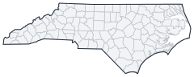

Historical county changes, 1790–1990 › North Carolina

| Name↕ | Unit↕ | Existed↕ | FIPS↕ |
|---|---|---|---|
| Alamance County | county | 1850–1990 | 37001 |
| Alexander County | county | 1850–1990 | 37003 |
| Alleghany County | county | 1860–1990 | 37005 |
| Anson County | county | 1790–1990 | 37007 |
| Ashe County | county | 1800–1990 | 37009 |
| Avery County | county | 1920–1990 | 37011 |
| Beaufort County | county | 1790–1990 | 37013 |
| Bertie County | county | 1790–1990 | 37015 |
| Bladen County | county | 1790–1990 | 37017 |
| Brunswick County | county | 1790–1990 | 37019 |
| Buncombe County | county | 1800–1990 | 37021 |
| Burke County | county | 1790–1990 | 37023 |
| Cabarrus County | county | 1800–1990 | 37025 |
| Caldwell County | county | 1850–1990 | 37027 |
| Camden County | county | 1790–1990 | 37029 |
| Carteret County | county | 1790–1990 | 37031 |
| Caswell County | county | 1790–1990 | 37033 |
| Catawba County | county | 1850–1990 | 37035 |
| Chatham County | county | 1790–1990 | 37037 |
| Cherokee County | county | 1840–1990 | 37039 |
| Chowan County | county | 1790–1990 | 37041 |
| Clay County | county | 1870–1990 | 37043 |
| Cleveland County | county | 1850–1990 | 37045 |
| Columbus County | county | 1810–1990 | 37047 |
| Craven County | county | 1790–1990 | 37049 |
| Cumberland County | county | 1790–1990 | 37051 |
| Currituck County | county | 1790–1990 | 37053 |
| Dare County | county | 1870–1990 | 37055 |
| Davidson County | county | 1830–1990 | 37057 |
| Davie County | county | 1840–1990 | 37059 |
| Duplin County | county | 1790–1990 | 37061 |
| Durham County | county | 1890–1990 | 37063 |
| Edgecombe County | county | 1790–1990 | 37065 |
| Forsyth County | county | 1850–1990 | 37067 |
| Franklin County | county | 1790–1990 | 37069 |
| Gaston County | county | 1850–1990 | 37071 |
| Gates County | county | 1790–1990 | 37073 |
| Graham County | county | 1880–1990 | 37075 |
| Granville County | county | 1790–1990 | 37077 |
| Greene County | county | 1790–1990 | 37079 |
| Guilford County | county | 1790–1990 | 37081 |
| Halifax County | county | 1790–1990 | 37083 |
| Harnett County | county | 1860–1990 | 37085 |
| Haywood County | county | 1810–1990 | 37087 |
| Henderson County | county | 1840–1990 | 37089 |
| Hertford County | county | 1790–1990 | 37091 |
| Hoke County | county | 1920–1990 | 37093 |
| Hyde County | county | 1790–1990 | 37095 |
| Iredell County | county | 1790–1990 | 37097 |
| Jackson County | county | 1860–1990 | 37099 |
| Johnston County | county | 1790–1990 | 37101 |
| Jones County | county | 1790–1990 | 37103 |
| Lee County | county | 1910–1990 | 37105 |
| Lenoir County | county | 1800–1990 | 37107 |
| Lincoln County | county | 1790–1990 | 37109 |
| Macon County | county | 1830–1990 | 37113 |
| Madison County | county | 1860–1990 | 37115 |
| Martin County | county | 1790–1990 | 37117 |
| McDowell County | county | 1850–1990 | 37111 |
| Mecklenburg County | county | 1790–1990 | 37119 |
| Mitchell County | county | 1870–1990 | 37121 |
| Montgomery County | county | 1790–1990 | 37123 |
| Moore County | county | 1790–1990 | 37125 |
| Nash County | county | 1790–1990 | 37127 |
| New Hanover County | county | 1790–1990 | 37129 |
| Northampton County | county | 1790–1990 | 37131 |
| Onslow County | county | 1790–1990 | 37133 |
| Orange County | county | 1790–1990 | 37135 |
| Pamlico County | county | 1880–1990 | 37137 |
| Pasquotank County | county | 1790–1990 | 37139 |
| Pender County | county | 1880–1990 | 37141 |
| Perquimans County | county | 1790–1990 | 37143 |
| Person County | county | 1800–1990 | 37145 |
| Pitt County | county | 1790–1990 | 37147 |
| Polk County | county | 1860–1990 | 37149 |
| Randolph County | county | 1790–1990 | 37151 |
| Richmond County | county | 1790–1990 | 37153 |
| Robeson County | county | 1790–1990 | 37155 |
| Rockingham County | county | 1790–1990 | 37157 |
| Rowan County | county | 1790–1990 | 37159 |
| Rutherford County | county | 1790–1990 | 37161 |
| Sampson County | county | 1790–1990 | 37163 |
| Scotland County | county | 1900–1990 | 37165 |
| Stanly County | county | 1850–1990 | 37167 |
| Stokes County | county | 1790–1990 | 37169 |
| Surry County | county | 1790–1990 | 37171 |
| Swain County | county | 1880–1990 | 37173 |
| Transylvania County | county | 1870–1990 | 37175 |
| Tyrrell County | county | 1790–1990 | 37177 |
| Union County | county | 1850–1990 | 37179 |
| Vance County | county | 1890–1990 | 37181 |
| Wake County | county | 1790–1990 | 37183 |
| Walton County | county | 1810 | 37183.1 |
| Warren County | county | 1790–1990 | 37185 |
| Washington County | county | 1800–1990 | 37187 |
| Watauga County | county | 1850–1990 | 37189 |
| Wayne County | county | 1790–1990 | 37191 |
| Wilkes County | county | 1790–1990 | 37193 |
| Wilson County | county | 1860–1990 | 37195 |
| Yadkin County | county | 1860–1990 | 37197 |
| Yancey County | county | 1840–1990 | 37199 |
Note: Decimals in FIPS codes come from Forstall, who gives every county a code, including counties that no longer exist. A county abolished between 1930 and 1990 keeps the code it had. However, a county which was abolished prior to 1930 never received a code. Such a county is given the code of the county which precedes it alphabetically plus a decimal to hold its place in the list.
Source: Richard L. Forstall (1996), Population of States and Counties of the United States: 1790 to 1990, U.S. Bureau of the Census (public domain). Always check a row against the scan it links to.